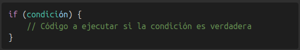
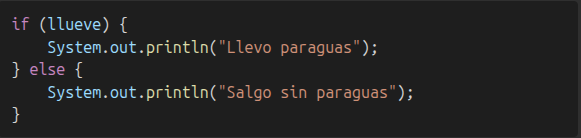
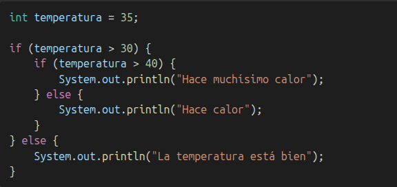
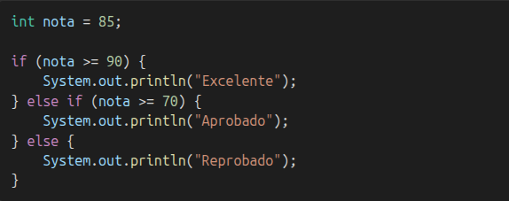

¡Bienvenido nuevamente. En esta seccion aprenderas a tomar decisiones dentro de tus programas usando estructuras llamadas condicionales! Estas son esenciales para que tu codigo reaccione de una forma especifica a diferentes situaciones, tu mismo decides como respondera el programa de acuerdo a un caso determinado.
Sin embargo, antes de saber como hacer esto, es importante conocer que es un booleano o bool.
Un booleano es un tipo de dato que solo puede tener dos valores posibles, estos valores son llamados valores de verdad, y estos son: true(verdadero) y false(falso). En la programacion, los booleanos son usados para tomar decisiones, ya que permiten evaluar condiciones y determinar el flujo de un programa. Por ejemplo, si tienes una variable llamada "esMayorDeEdad" que es de tipo booleano, puedes usarla para decidir si una persona puede entrar a un bar o no. Si "esMayorDeEdad" es true, entonces la persona puede entrar; si es false, no puede entrar. Es como un interruptor de luz que puede estar encendido o apagado. Los usamos para comprobar si algo es cierto o no.
Los condicionales son instrucciones que permiten que el programa tome decisiones. Sirven para ejecutar una parte del codigo solo si se cumple una condicion.
La sentencia if es una estructura que ejecuta un bloque de codigo solo si la condicion dentro del parentensis es verdadera (true)
La sentencia if, sirve para ejecutar un bloque de codigo solo si se cumple una condicion especifica, si no se cumple, el programa simplemente ignora ese bloque
La sentencia else es una palabra clave que se usa para darle a enteneder a la maquina que en caso de que no se halla cumplido la sentencia if, entonces se ejecute lo que haya dentro de la sentencia else. En otras palabras se ejecuta si la ocndicion if es falsa
Para definir que hacer cuando no se cumpla la condicion inicial
Se combinan if y else para tener un camino claro: si algo sucede, haces una cosa; si nom haces la otra.
Un condicional anidado es un caso en el cual un if se encuentra dentro de otro if, esto permite evaluar varios condicionales paso a paso, como se muestra en la siguiente imagen.
o tambien puedes usar else if para multiples condiciones
La sentencia switch evalua una variable contra varios posibles valores y ejecuta el bloque correspondiente. Es útil cuando tienes muchas condiciones sobre una misma variable.
Los condicionales son el alma de las decisiones en un programa. Gracias a ellos puedes hacer que tu aplicacion se adapte a diferentes situaciones, igual que tu lo haces en la vida real. Ahora que conoces if, else, else if y switch, ¡tienes las herramientas basicas para controlar el flujo de tu codigo!